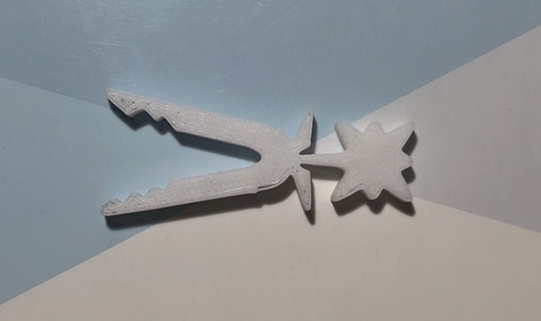
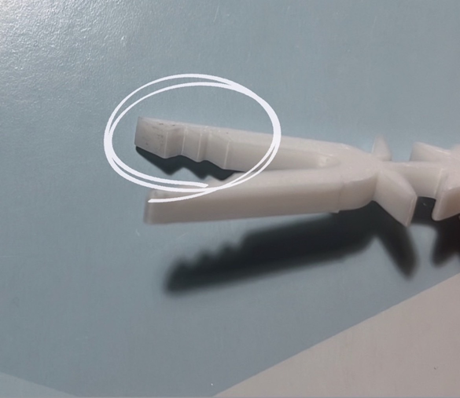
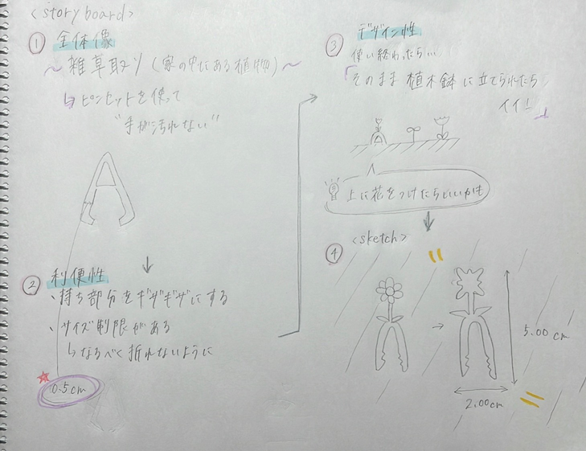
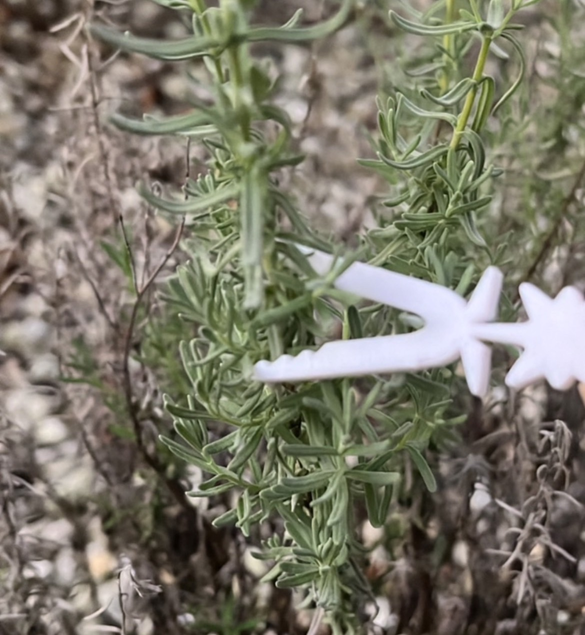
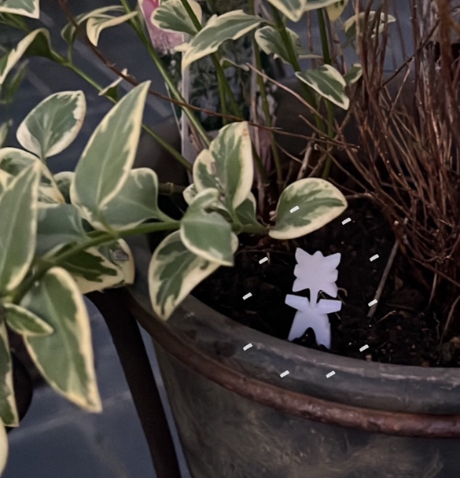
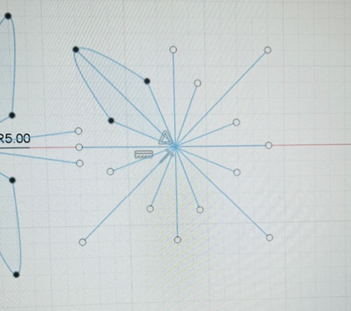
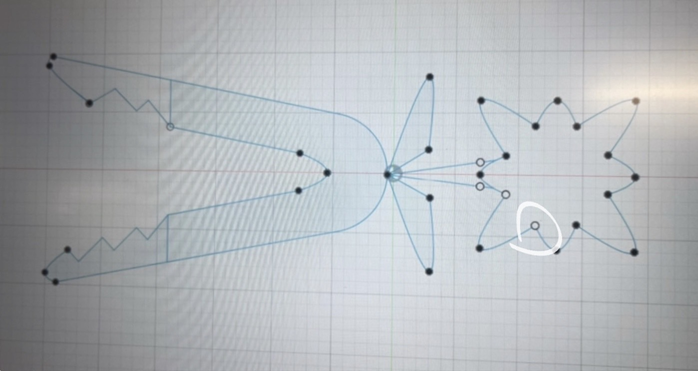
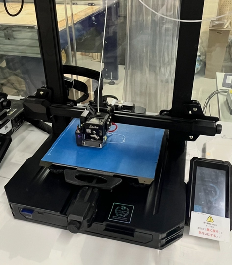

第1回 3Dprinting
☆彡 Flowers bloom tweezers 〜
..."花を咲かせるピンセット"には二つの意味を込めました。
①植物を栽培する上で必要不可欠な「雑草や間引き」を用途とし、プランターに花を咲かせる
②ピンセットを立てると花が咲くデザイン
－完成品の写真－


stlファイルはこちら
－作品の説明－
この作品のポイントは 、用途「雑草抜き」×デザイン「花が咲く」であり、デザイン性と機能性を掛け合わせた点です。
屋内で栽培している植物や観葉植物を、手を汚さず手入れをすることができます。
また、ピンセットの先に凹凸をつけて滑らず掴めるようにし、土に立てる際には折れないように
幅を0.5ｃｍと丈夫なデザインにしました。
－構想段階のスケッチ・ストーリーボード－

初めは何か面白い機能性があるピンセットにしようと考えていましたが、
サイズの上限があるため、あまり凝った細かいものだと耐久性が欠けてしまうと思いました。
帰宅後、家の中を見渡すと観葉植物が目に入り、
ピンセットの「間接的に物をつかむ」という特徴を上手く活用して、
手を汚さず手入れできないかと考え、このピンセットを思いつきました！
－実際に使ってみた－


ちゃんと使えました！
色付けたらもっとかわいくなるのかな…？と思いました
－制作プロセスの中で学んだこと－

花の部分が複雑だったので、①先に軸を書き、②点をつなげて、③軸を削除する方法がやりやすかったです。

↑スケッチ中に白い点が繋がらないという事件が発生しました。（黒い点にならないと繋がっていない）
ファブラボの方に聞いたところファブラボ内のパソコンのイラストレーターを使用させていただき、何とかなりました。
ファブラボのスタッフさん丁寧に教えてくださり本当に感謝しかないです。
原因は不明なままですが、一度スケッチを終了し保存してから、再びスケッチしたのと一度書きでない書き方をしたのが要因かなと思っています…

プリント一回目が上手くできていなく失敗したので、プリント初め～一層目はよく見ていたほうがいいです。
（↑上のように層になってたらOKです。）
－感想－
いままでこのような製品、サービスがあったら便利だなと構想することはありましたが、
あくまで構想止まりで、今回の授業を通して自分で一から考えたものが形になる経験をすることができ、
物作りの楽しさを実感しました。
楽しい反面、小さなピンセットでも制作の過程で上手くいかないこと、失敗したことがたくさんあり、
物を作ることの大変さ、製作者の気持ちを少しばかりですが知れたと思います。
様々な技術を持ち合わせ、こだわりをもって制作できる人になりたいと改めて思いました！